이 합본을 읽는 법
이 합본은 AI에게 3D 웹사이트를 만들게 하는 영상 여섯 편의 정리 노트를 한 흐름으로 다시 엮은 거예요. 네 편은 사이트 하나를 처음부터 끝까지 만들고, 두 편은 사이트에 넣을 3D 재료를 다뤄요. 영상 순서대로 늘어놓지 않고 작업 순서대로 모았어요. 여러 영상이 같은 말을 하면 한 번만 쓰고 누가 그랬는지 밝혔고, 도구나 숫자가 다르면 나란히 놓았어요.
아래 그림이 이 글의 지도예요. 왼쪽 위 '재료가 결과를 정해요'에서 출발해 재료를 준비하고, 원하는 움직임을 AI에게 전하고, Three.js로 구현된 결과를 확인하고 고친 뒤, 배포하고 비용을 따지는 순서로 이어져요.
영상마다 이 합본에서 쓰인 자리는 다음과 같아요. 제목을 누르면 그 영상 하나만 정리한 노트로 가요. 원본 유튜브 링크는 맨 아래 '참고한 곳'에 모아 뒀어요.
| 묶음 | 영상 | 채널 · 길이 | 이 합본에서 |
|---|---|---|---|
| 3D 웹사이트 만들기 | Claude Opus 5.5로 3D 웹사이트 만들기 (전기 자전거 사이트) | Create a Pro Website · 25:50 | 3~11절 |
| 디자인은 끝났다? Claude로 3D 애니메이션 랜딩 페이지 만들기 | Viktor Oddy · 10:59 | 2~4·6·7·10·11절 | |
| Claude Opus 5.5와 Three.js로 시네마틱 3D 웹사이트 만들기 (전용기 사이트) | MiladiCode · 11:04 | 2~11절 | |
| Claude Opus 5.5로 3D 게임 웹사이트 만들기 | MiladiCode · 23:16 | 2~9·11절 | |
| 사이트에 넣을 3D 재료 | Claude와 Three.js로 3D 모션 그래픽 만들기 | Matt Penny | Applied AI · 12:19 | 2·7~9·11절 |
| 코딩 에이전트의 빈틈을 메우는 GitHub 저장소 8개 | AI LABS · 12:39 | 5·11절 (저장소 8개 중 img2threejs 부분만 썼어요) |
결과를 가르는 건 모델보다 재료예요
여섯 영상이 가장 많이 겹치는 말은 이거예요. AI에게 "3D 웹사이트 만들어 줘"라고만 하면 어디서 본 듯한 페이지가 나와요. 결과를 끌어올리는 건 더 좋은 모델이 아니라 AI에게 건네는 재료예요.
같은 AI, 세 가지 차이
Viktor Oddy는 같은 AI로 만든 두 페이지를 나란히 놓아요. 왼쪽 'SLOP'은 보라 그라데이션에 흔한 문구가 들어간 페이지, 오른쪽 'FIXED'는 벌새와 해바라기가 있는 페이지예요. 아래 노란 띠의 문구처럼 모델은 같고, 차이는 세 가지라고 해요.

세 가지는 첫 화면을 채우는 히어로 이미지, 커서나 스크롤에 반응하는 3D 물체 하나, 그리고 글꼴·줄 수·동작까지 적은 정확한 프롬프트예요. 세 번째 카드에는 Poppins 800 글꼴, 두 줄 가운데 정렬 제목, 새가 커서를 따라가게 하라는 예시가 적혀 있어요.
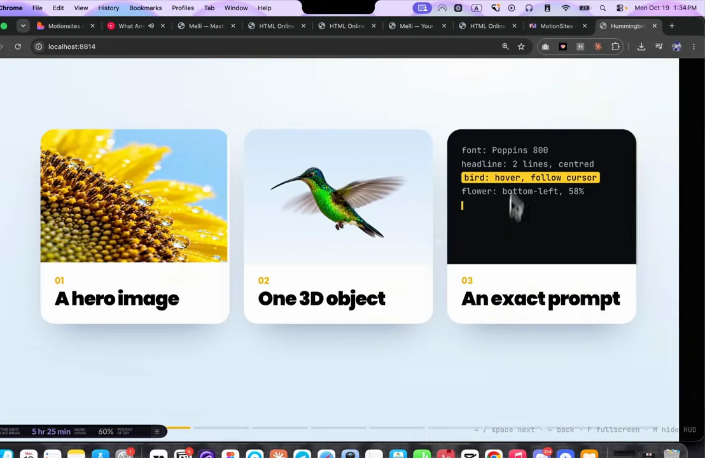
주인공 모델은 AI에게 맡기지 않았어요
MiladiCode의 전용기 사이트 영상도 같은 결론에 닿아요. 발표자는 처음에 참고 이미지와 짧은 프롬프트만 주고 한 번 만들어 봤어요. 그 결과가 아래 'NOCTURNE' 사이트예요. 흰 구름 배경과 'One unbroken line, nose to tail.' 문구, 아래쪽 숫자 배치까지 깔끔해요. 그런데 가운데 검은 전용기의 디테일이 실제처럼 보이지 않았어요.
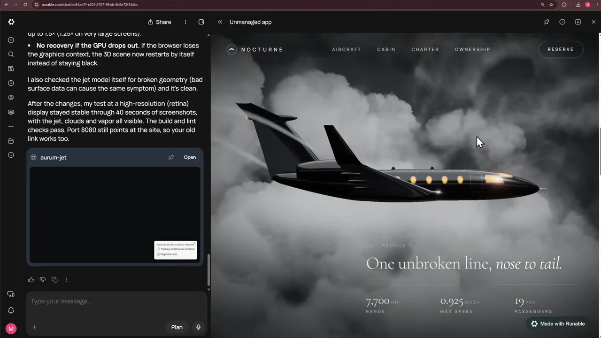
그래서 역할을 나눠요. 구름 같은 환경은 AI가 만들게 두고, 제품이든 캐릭터든 화면의 주인공인 3D 모델은 직접 구한 파일로 넣어요. 같은 채널의 게임 사이트 영상도, 전기 자전거 사이트 영상도 주인공은 이미지에서 따로 만든 3D 모델 파일을 썼어요.
그래도 모델은 골라요
재료가 먼저라고 해서 모델이 상관없다는 뜻은 아니에요. 사이트 영상 네 편과 모션 그래픽 영상은 모두 Opus 5.5를 골랐고, 두 사람은 비교해 본 결과를 따로 말해요.
- Matt Penny(모션 그래픽)는 여러 모델을 다 써 봤는데 녹화 시점엔 Opus 5.5가 가장 좋았다고 해요. 같은 회사의 Sonnet 5.5보다도, OpenAI 모델보다도 눈에 띄게 낫다고 봐요.
- MiladiCode(게임 사이트)는 다른 도구로도 따라 할 수 있다면서도, 3D 환경·캐릭터 모델·애니메이션 작업에서는 Claude Code가 가장 나았다고 말해요.
Oddy는 마지막에 이렇게 정리해요. 지금까지 보여 준 결과물은 모두 프롬프트 한 번에 나온 원샷이라 완성품이 아니에요. 조금만 더 시간을 쓰면 처음 보여 준 'FIXED' 수준까지 갈 수 있다고 해요.
네 영상의 작업 흐름 한눈에
사이트를 끝까지 만드는 네 영상은 모두 코드를 직접 쓰지 않아요. 큰 순서도 비슷해요. 재료를 모으고, 첫 화면(히어로)부터 만들고, 나머지 섹션을 붙이고, 확인하고 고친 뒤 배포해요. 다른 건 어느 도구 위에서, 무엇을 재료로 쓰는지예요.
| 전기 자전거 사이트 | 3D 랜딩 페이지 | 전용기 사이트 | 게임 사이트 | |
|---|---|---|---|---|
| 작업 도구 | Claude 데스크톱의 Code 탭(Claude Code) + 지시서 CLAUDE.md | Claude 데스크톱 앱 | AI 빌더 Runable (모델은 Opus 5.5 선택) | Claude Code |
| 출발 재료 | 브랜드 정보, 말로 한 주문 | 기존 사이트 문구, 레퍼런스 캡처와 화면 녹화 | Pinterest 사진으로 만든 참고 이미지 | 캐릭터 그림, 참고 사이트 화면 녹화 |
| 주인공 3D | 제품 사진을 3D로 변환 (Meshy 7 · Tripo H3.1) | Claude가 그린 3D 물체 (파란 슬랩 더미) | Sketchfab에서 받은 GLB | 캐릭터 그림을 Tripo로 변환한 GLB |
| 이미지·영상 | Higgsfield 커넥터 | Figma 안 GPT(Generative Pre-trained Transformer) 이미지, Seedance 2.5 | Runable 안 GPT Image 2.5, Seedance 2.5 | Higgsfield MCP(Model Context Protocol) |
| 확인 | 미리보기를 보고 대화로 수정 | 원샷 결과 확인 | 에이전트 보고, Edit 기능 | TestSprite로 자동 테스트 |
| 배포 | Hostinger 커넥터로 내 도메인 | Vercel에 폴더 끌어다 놓기 | Runable Publish | 영상에서 다루지 않아요 |
지시서 한 파일이 순서를 이끄는 방식
Create a Pro Website의 전기 자전거 사이트 영상은 프롬프트를 여러 번 붙여 넣지 않아요. 프로젝트 폴더에 지시서 CLAUDE.md를 넣어 두면 그 파일이 작업 순서를 잡아요. 오른쪽에 열린 파일에 브랜드 키트 규칙과 'Phase 2 of 6' 제목이 보이는데, 사이트 사양과 여섯 단계가 길게 적혀 있어요.

사람은 마이크로 "지형을 가리지 않는 전기 자전거를 몰입감 있고 하이테크하게"처럼 짧게 말하기만 해요. 그러면 Claude가 지시서를 읽고 브랜드 키트 → 히어로 → 3D·영상 → 사이트 → 수정 → 배포 여섯 단계를 질문하며 진행해요. 첫 단계에서는 슬로건, 대상 고객, 색상, 폰트, 자전거 사양 같은 질문 11개를 던져요.
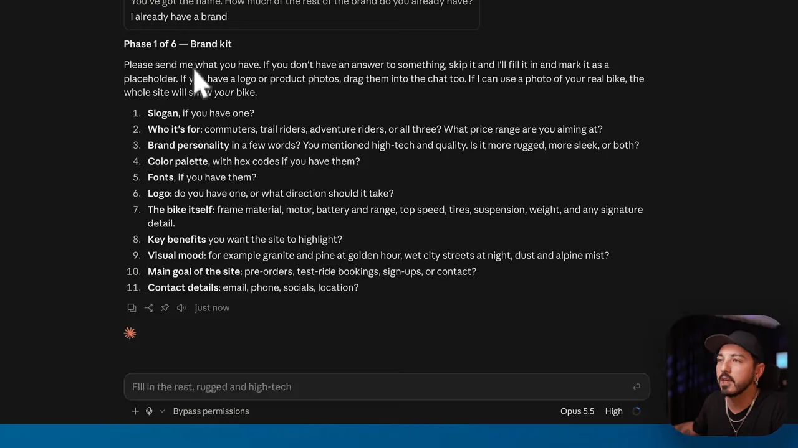
발표자는 브랜드명, 슬로건, 가격, 색상 코드, 연락처를 미리 정리해 붙여 넣었어요. Claude는 이걸 copy/brand-kit.md로 저장하고, 비어 있던 스펙은 [placeholder] 표시를 달아 채워 둬요. 확인하고 "next"라고 하면 다음 단계로 넘어가요. 사람의 일은 단계마다 고르고, 승인하고, 고칠 점을 말하는 것으로 줄어요.
빌더 서비스 안에서 끝내는 방식
MiladiCode의 전용기 사이트는 AI 빌더 Runable 하나로 만들어요. 대시보드 가운데 프롬프트 칸 아래에 Code(웹사이트·앱), Productivity(슬라이드·리포트 등), Content Creation(영상·이미지·오디오) 메뉴가 모여 있어요. 이미지·영상 생성과 배포가 이 안에 다 들어 있어서 따로 커넥터를 붙이지 않아요.

나머지 두 영상은 그 중간이에요. Oddy는 Claude 데스크톱 앱에 새 '3d website' 폴더를 만들고 대화로 진행해요. 게임 사이트 영상은 Claude Code에 재료 파일을 넣고, 필요한 생성 도구는 MCP로 붙여요(6절).
재료 ① 히어로 이미지
히어로는 사이트에 들어오자마자 보이는 첫 화면이에요. 세 영상이 히어로 이미지를 만드는 방법이 달라요. 후보 여러 장을 뽑아 고르는 방법, 레퍼런스와 초안을 섞어 목표 그림을 먼저 그리는 방법, 남의 사진을 분위기 참고용으로만 쓰는 방법이에요.
후보 세 장을 뽑아 고르기
전기 자전거 사이트 영상에서 Claude는 2단계에 히어로를 어떻게 살릴지부터 물어요. 스크롤에 맞춰 재생되는 시네마틱 영상, 돌려 볼 수 있는 3D 모델, 또는 둘 다예요. 발표자는 둘 다를 골랐어요. 그러면 Claude가 GPT Image 2로 후보 세 장을 약 20크레딧에 만들어요. 위쪽 Generations 패널에 세 장이 나란히 있고, 아래에 Claude의 비교 설명과 고를 수 있는 선택지가 붙어요.

고른 1번이 아래 그림이에요. 비에 젖은 산길에 프레임을 따라 라임색 빛줄기가 들어간 자전거가 서 있어요. 이 이미지를 기준으로 분위기를 맞춘 추가 이미지와, 3D 변환용 깔끔한 제품 사진이 이어서 만들어져요.

레퍼런스와 초안을 섞어 목표 그림부터 만들기
Viktor Oddy는 반대 방향으로 가요. 먼저 Claude에게 기존 사이트 문구만 붙여 넣고 "이 웹사이트의 히어로 섹션만 만들어 줘"라고 보내요. 첫 결과는 흰 배경 왼쪽에 네 줄짜리 제목, 오른쪽에 파란 슬랩을 쌓은 3D 물체가 있는 페이지예요. 나쁘지 않지만 AI가 만든 티가 나요.
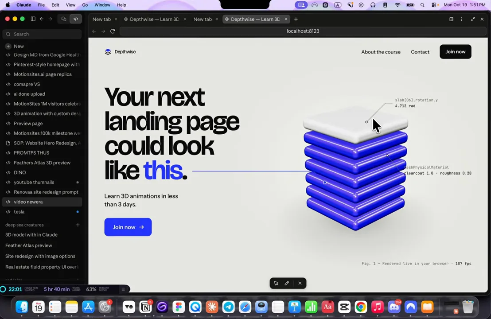
그래서 이렇게 고쳐요.
- 마음에 드는 레퍼런스 사이트를 캡처해요 — 발표자는 꿀벌이 있는 히어로를 골랐어요.
- Claude가 만든 결과도 캡처해요
- 두 이미지를 이미지 생성 모델에 넣어요 — 발표자는 Figma 안의 GPT 이미지 기능을 써요. "첫 번째 이미지처럼 만들되, 새와 스타일은 두 번째 이미지로 바꿔 줘"라고 해요. 레퍼런스의 배치에 내 물체가 들어간 목표 그림이 나와요
- 나온 이미지를 Claude에 붙여 넣어요 — "글꼴과 모든 요소의 위치를 이 이미지에 맞춰 줘"라고 해요.
3번에서 나온 목표 그림이 아래 Figma 캔버스예요. 제목이 가운데 두 줄로 정리되고, 슬랩 더미가 그 아래 가운데로 왔고, 오른쪽에 짧은 소개 문구와 버튼이 있어요.

이 그림을 받은 Claude가 만든 히어로가 아래예요. 두 줄 제목과 슬랩 더미, 오른쪽 문구와 Join now 버튼까지 목표 그림의 배치를 그대로 따랐어요. 발표자는 AI가 처음부터 모바일 반응형으로 만들어 준다는 점도 짚어요. Framer나 Webflow로 만들 때처럼 모바일 화면을 따로 손볼 일이 없었다고 해요.
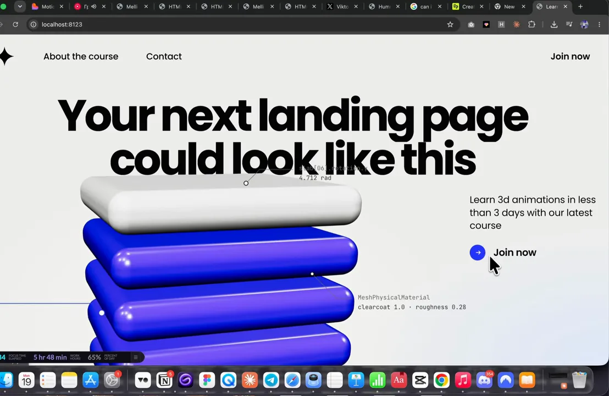
남의 사진은 분위기 참고용으로만
전용기 사이트 영상의 발표자는 Pinterest에서 구름 위를 나는 검은 전용기 사진을 받아, 그걸로 Runable에서 참고 이미지를 만들어 올려 둬요. 프롬프트에서는 이 이미지를 구름·분위기·조명 참고용으로만 쓰고, 기체는 따로 넣은 3D 모델을 쓰라고 못 박아요(5절).
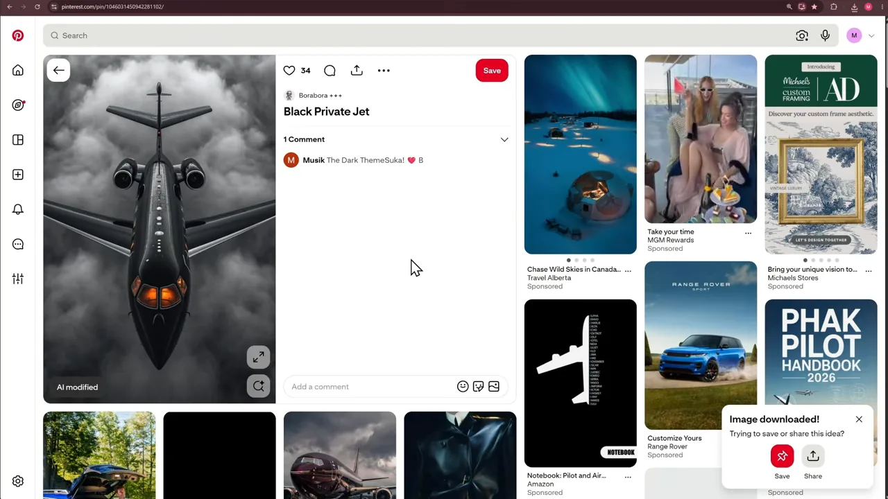
Oddy도 레퍼런스를 다루는 선을 비슷하게 그어요. 레이아웃과 내용 배치만 참고하고, 브랜드와 가격 같은 내용은 내 것으로 바꿔야 복제품처럼 보이지 않는다고 해요.
재료 ② 3D 모델: 받기, 바꾸기, 코드로 짓기
화면의 주인공이 되는 3D 모델을 구하는 길은 세 갈래예요. 이미 있는 모델을 받거나, 이미지를 3D로 바꾸거나, 코드로 처음부터 짓는 거예요. 게임 사이트 영상의 발표자도 받기와 바꾸기를 함께 선택지로 꼽아요. 영상들이 실제로 쓴 방법을 나란히 놓으면 이래요.
| 길 | 쓴 영상 | 어떻게 | 짚은 점 |
|---|---|---|---|
| 받기 | 전용기 사이트 | Sketchfab에서 검색하고 다운로드 가능 필터를 켠 뒤 GLB로 받아요 | 라이선스를 확인해요. 이 모델은 작성자 표기가 필요한 CC(Creative Commons) Attribution이었어요 |
| 이미지를 3D로 바꾸기 | 게임 사이트 | 캐릭터 그림을 전신·투명 배경으로 다듬고 Tripo에서 3D로 바꿔 GLB로 내보내요 | GLB 내보내기는 Tripo 유료 구독이 필요해요 |
| 전기 자전거 사이트 | 깔끔한 제품 사진을 Higgsfield에서 Meshy 7과 Tripo H3.1 두 엔진으로 변환해 비교해요 | 바큇살처럼 가는 부품은 변환에서 잘 뭉개져요 | |
| 코드로 짓기 | 깃허브 저장소 영상(img2threejs) | 사진 한 장을 주면 에이전트가 Three.js 코드로 모델을 쌓아요 | 토큰을 많이 쓰고 오래 걸려요. G63 차량은 3시간 넘게 걸렸어요 |
받기: Sketchfab에서 GLB로
전용기 사이트의 발표자는 Sketchfab에서 'jet'으로 검색하고 다운로드 가능 필터를 켠 뒤, 구름은 없지만 기체가 잘 만들어진 검은 전용기 모델을 골라요. 다운로드 창 아래쪽 목록에 blend, USDZ(Universal Scene Description Zip), glTF, GLB 형식이 있는데 GLB로 받으라고 강조해요. 왼쪽 위에는 라이선스가, 오른쪽 위에는 작성자 표기 문구와 'COPY CREDITS' 버튼이 있어요.
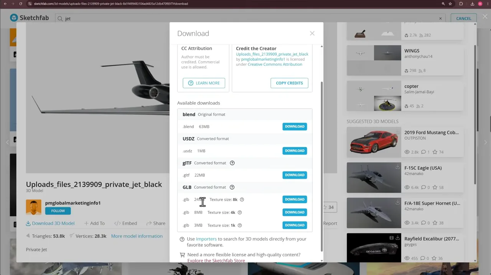
이미지를 3D로 바꾸기: 변환하기 좋은 그림부터
게임 사이트 영상은 Pinterest나 Awwwards에서 받은 캐릭터 그림에서 출발해요. 바로 3D로 바꾸지 않고, 먼저 Higgsfield 이미지 생성에 올려 세 가지를 부탁해요. 칼·다리·신발까지 전신이 다 보이게, 3D 모델로 만들기 좋게, 배경은 투명하게요. 모델은 GPT Image 2.5, 해상도는 4K를 골랐어요. 왼쪽이 그렇게 나온 투명 배경의 전신 그림이에요.

이 그림을 Tripo에 올려요. Clean Topology와 Best Quality 중 이 캐릭터는 Best Quality(HD(High Definition) 모델)가 디테일이 더 살았어요. 내보내기 창에서 Format을 GLB로, 텍스처는 4k로 고르고 파일을 프로젝트 폴더에 넣어 둬요. Claude가 그 파일을 직접 읽어야 하거든요.
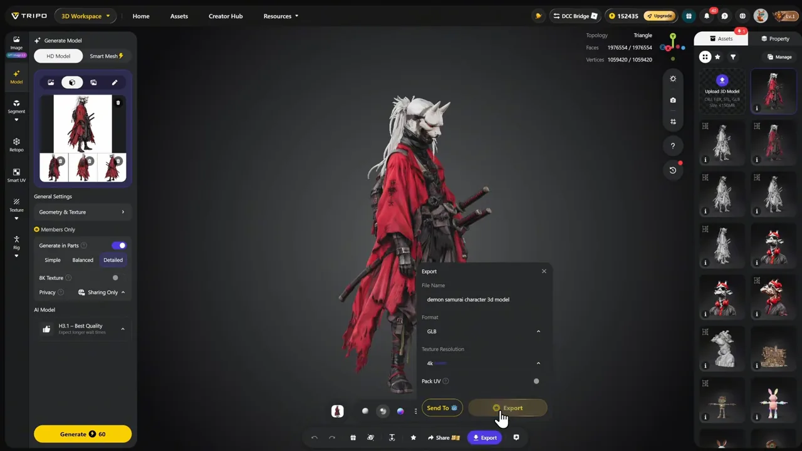
전기 자전거 사이트 영상은 이 과정을 Claude가 Higgsfield 커넥터로 대신 해요. 히어로 이미지를 고른 뒤 3D 변환용으로 밝은 회색 배경의 깔끔한 옆모습 사진을 따로 만들고, 그 사진으로 Meshy 7과 Tripo H3.1 두 엔진에서 모델을 하나씩 뽑아요. 둘 다면 약 62크레딧, 하나면 44크레딧이에요. 완성된 모델은 앱 안 브라우저에서 옆·앞·뒤·비스듬한 위 네 방향으로 렌더링해 비교해요.
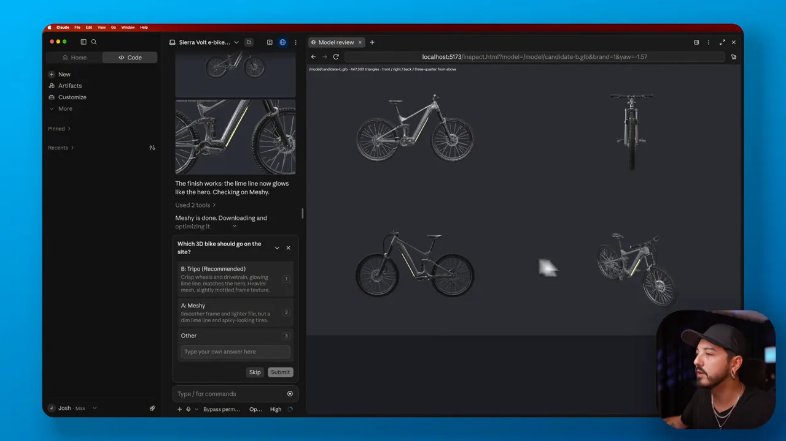
Claude는 변환 전에 위험도 먼저 알려 줬어요. 바큇살처럼 가는 부품은 3D 변환에서 잘 뭉개진다는 거예요.
뼈대가 없는 모델은 Claude가 리깅했어요
게임 사이트 영상은 리깅 안 된 모델을 그대로 넘겼어요. Claude는 참고 녹화와 GLB를 살펴보고 모델이 메시 조각 34개, 버텍스 약 110만 개짜리인데 뼈대도 애니메이션도 없다고 파악했어요. 아래 화면의 파란 강조 문장이 그 진단이에요. 그래서 Blender로 리깅과 걷기 동작부터 만들기로 계획했어요.
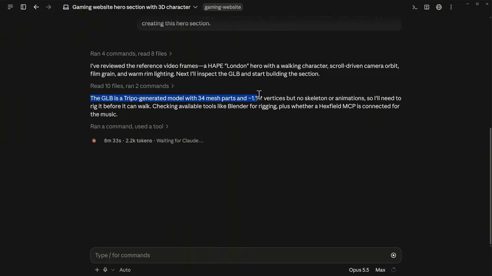
결과는 절반의 성공이었어요. 캐릭터는 걸었지만 첫 걸음은 뻣뻣해서 한 번 더 고쳐야 했어요. 그 진단과 수정은 9절에서 다뤄요.
코드로 짓기: img2threejs
깃허브 저장소 영상이 소개한 img2threejs는 사진 속 물건을 코드로만 이루어진 3D 모델로 다시 만드는 스킬이에요. 왼쪽이 원본 헤드폰 사진, 오른쪽이 만들어지는 중인 회색 3D 모델이에요. 쓰는 법은 간단해요. 만들고 싶은 이미지를 주고 img2threejs로 3D 모델을 만들라고 하면 돼요.
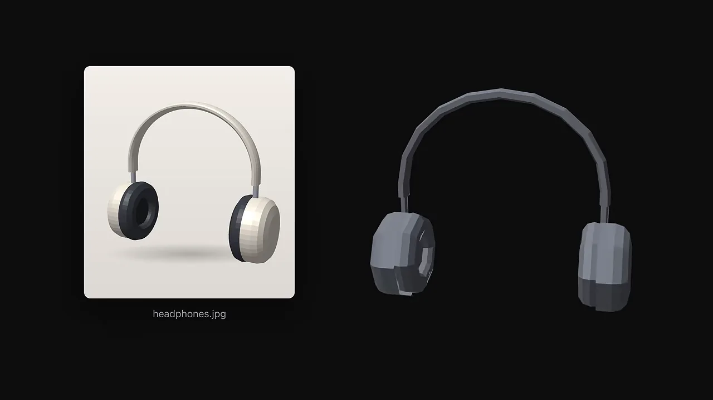
결과물이 Three.js 코드라서 랜딩 페이지에 바로 넣고, 움직이게 하고, 방문자가 돌려 보게 할 수 있어요. 아래는 'Halo'라는 가상의 헤드폰 브랜드 페이지 오른쪽에 그 모델을 얹은 모습이에요. 모델이 코드이니 색이나 조명을 바꾸고 싶으면 에이전트에게 말로 시키면 돼요. 3D 프로그램을 따로 배울 필요가 없어요.

대가는 시간과 토큰이에요. 아래 터미널은 G63 차량 사진을 Three.js 모델로 다시 만든 작업의 끝부분이에요. 그릴 살 개수를 3개에서 14개로 바로잡았다는 문장 아래 'Churned for 3h 4m 32s'가 보여요. 첫 결과가 부족하면 특정 부분을 더 다듬어 달라고 계속 요청하면 돼요.
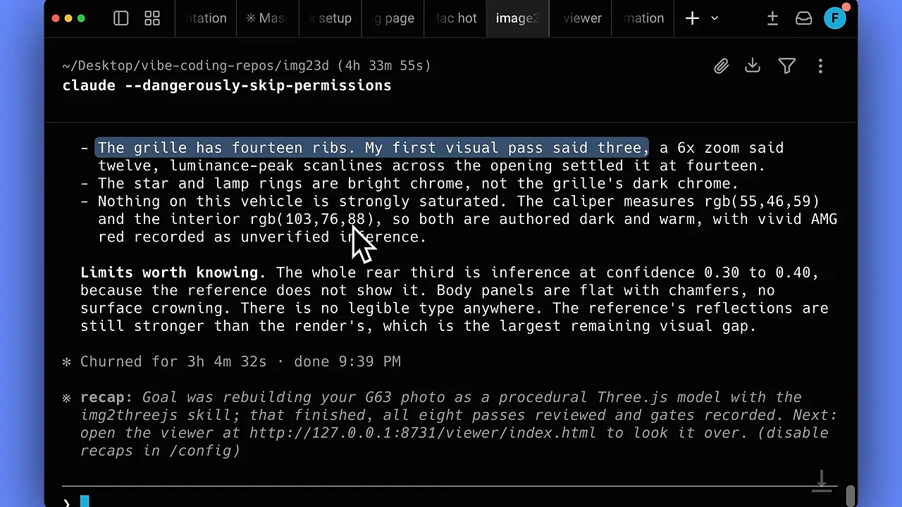
재료 ③ 영상과 소리
3D 모델 말고도 사이트에 들어가는 재료가 있어요. 배경 영상, 카드에 넣을 짧은 영상, 배경 음악이에요. 네 영상 모두 영상은 Seedance 2.5로 만들었어요. 다른 건 그 생성 도구를 어떻게 Claude 옆에 붙이는지예요.
생성 도구를 Claude에 붙이기
전기 자전거 사이트 영상과 게임 사이트 영상은 Higgsfield를 MCP 커넥터로 붙여요. Higgsfield 사이트의 MCP 탭에서 Claude용 주소(https://mcp.higgsfield.ai/mcp)를 복사하고, Claude 데스크톱의 Customize → Connectors → Add → 커스텀 커넥터에 붙여 넣은 뒤 Higgsfield 계정으로 로그인해요. 아래 창의 주소 칸에 그 주소가 들어가 있어요.
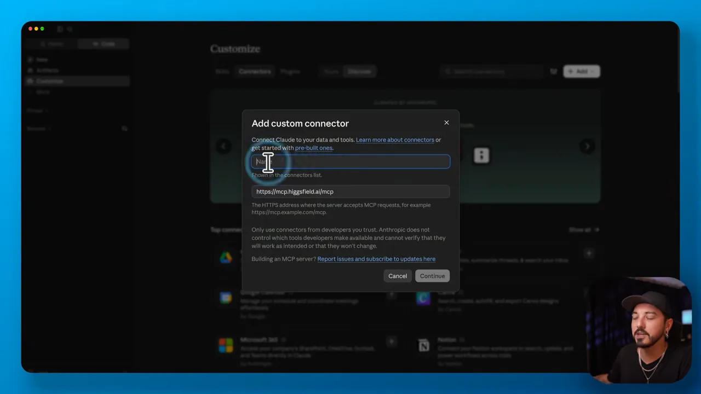
게임 사이트 영상의 발표자는 한 가지를 더 짚어요. Higgsfield의 MCP 메뉴에서 Claude 앱 연결을 고르면 이름과 서버 주소가 이미 채워진 화면으로 넘어가요. 그런데 인증을 마친 뒤 Claude 앱을 완전히 껐다 켜야 연결이 보였어요. 첫 시도에서 재시작을 안 해서 Claude가 Higgsfield를 못 찾았다고 해요.
나머지 두 영상은 커넥터를 붙이지 않아요. 전용기 사이트는 Runable 안에 GPT Image 2.5와 Seedance 2.5가 들어 있어요. Oddy는 Seedance 2.5를 Claude에 연결해 주는 서비스가 여럿 있으니 마음에 드는 걸 고르면 된다고만 말해요.
배경 영상: 장면을 말로 고쳐 주문하기
전기 자전거 사이트에서 Claude는 Seedance 2.5로 6초짜리 영상을 약 72크레딧에 만들자고 제안해요. 발표자는 제안을 그대로 받지 않고, 아래 Other 칸에 직접 장면을 적었어요. 도로를 달리던 자전거가 바위 산길로 넘어가는 장면이에요.
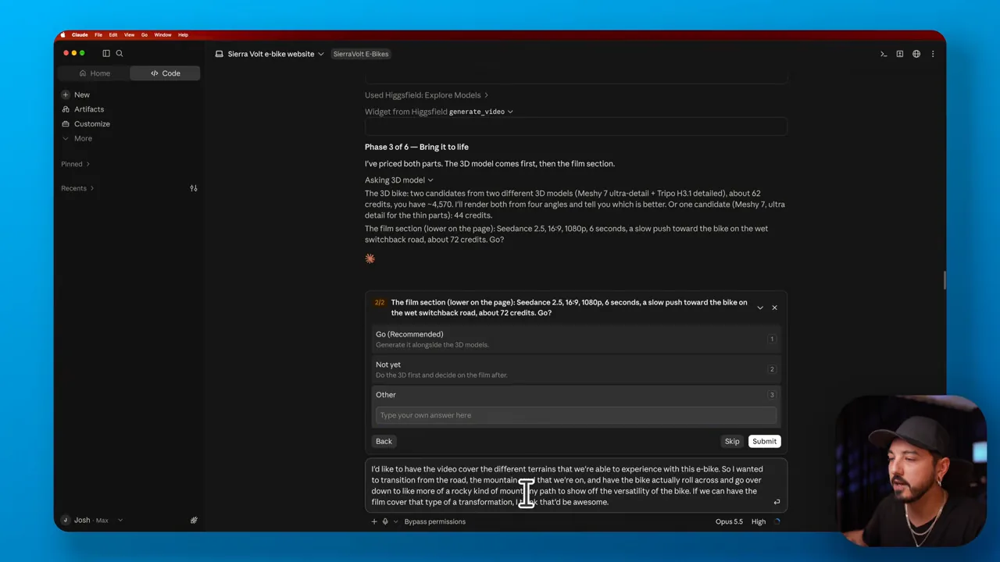
나온 영상이 아래예요. 젖은 산길에서 자전거가 길가 바위 위로 앞바퀴를 올려요. 완성 사이트에서는 이 영상이 스크롤에 맞춰 재생되는 구간이 되고, 아래 진행 막대에 'ROAD', 'TRAIL', 'LEDGE' 표시가 붙었어요.

남의 사이트 구성에 내 영상 넣기
Oddy의 두 번째 방법은 핀터레스트 이미지와 영상 생성 모델로 기존 사이트의 영상을 내 소재로 바꾸는 거예요. 발표자는 하늘을 배경으로 개구리들이 올려다보는 그림을 골랐어요.
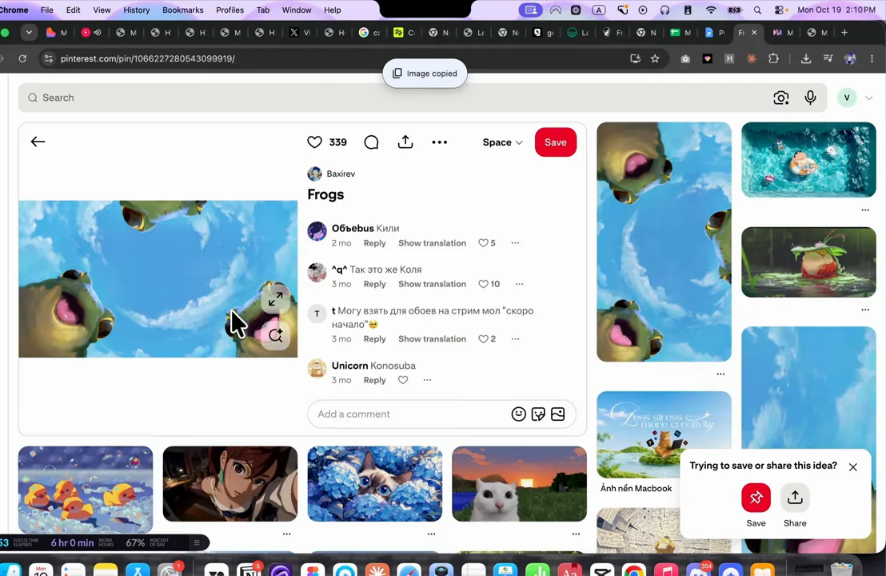
흐름은 세 단계예요. 개구리 이미지를 붙여 넣고, 마음에 드는 스크롤 애니메이션 사이트(AI Future Studio)의 프롬프트도 붙여 넣고, "Seedance 2.5로 메인 영상을 이 이미지에 관한 새 영상으로 바꿔 줘"라고 덧붙여요. 결과는 'PLATE'라는 가상의 AI 영상 스튜디오 사이트예요. 원래 사이트의 구성에 개구리 영상이 들어갔어요.

정지 이미지를 먼저, 그다음 움직이기
전용기 사이트의 두 번째 프롬프트에는 Asset generation 단락이 따로 있어요. 이미지는 GPT Image 2.5, 영상은 Seedance 2.5로 만들되, 정지 이미지를 먼저 만들고 그걸 움직이게 하라고 적어요. 호버·전환 효과음도 기존 사운드 설정을 따르게 해요.

게임 사이트도 카드 갤러리에 영상을 섞을 때 비슷하게 주문해요. 카드 14장 중 무작위 3장은 Higgsfield MCP로 영상을 만들어 넣고, 영상은 3~5초짜리로 자연스럽게 반복되게 해요. 게임 사이트이니 영상과 이미지 전반에 같은 캐릭터와 비슷한 인물·배경을 쓰라는 줄도 넣었어요(8절).
소리는 방문자가 켤 때만
소리를 넣은 영상은 둘이에요. 전용기 사이트는 배경 음악을 만들어 넣되 방문자가 소리 버튼을 눌러야 재생되게 했어요. 게임 사이트는 Higgsfield MCP로 참고 영상 분위기에 맞는 음악을 만들게 했어요. 이 소리 버튼은 나중에 테스트에서 '켜졌는지 꺼졌는지 안 보인다'는 문제로 걸려요(9절).
움직임을 AI에게 전하는 법
3D 사이트에서 가장 말로 하기 어려운 건 움직임이에요. "스크롤하면 멋지게 돌아가게"로는 원하는 결과가 안 나와요. 영상들은 세 가지 방법을 써요. 장면을 글로 하나하나 적거나, 초 단위 시간표로 적거나, 참고 사이트를 녹화해서 보여 줘요.
먼저 합의된 것: 히어로부터, 나머지는 따로
방법은 달라도 순서는 같아요. Oddy는 "이 웹사이트의 히어로 섹션만 만들어 줘"로 시작해요. MiladiCode는 두 영상 모두 첫 프롬프트로 히어로 하나만 만들게 하고, 게임 사이트에서는 "히어로 섹션에만 집중하라"고 못 박아요. 전기 자전거 사이트의 지시서도 히어로 단계를 사이트 생성보다 먼저 둬요. 나머지 섹션은 히어로가 마음에 든 뒤 두 번째 프롬프트로 붙여요. 전용기 사이트의 두 번째 프롬프트는 "이미 만든 히어로는 그대로 두고"로 시작해요.
세 가지 방법 나란히 보기
| 방법 | 누가 | 프롬프트에 넣은 것 |
|---|---|---|
| 장면을 글로 적기 | 전용기 사이트 | 모델과 배경, 비행 방식, 카메라 전환 다섯 개, 소리를 덩어리별로 문장으로 적어요. 참고 이미지는 분위기용으로만 써요 |
| 초 단위 시간표 | 모션 그래픽 | 15초, 1920×1080, 60fps 규격을 정하고 장면 다섯 개를 시간대별로 나눠요. 장면마다 무엇이 나오고 어떻게 움직이는지 적어요 |
| 참고 사이트 녹화 | 3D 랜딩 페이지, 게임 사이트 | 참고 사이트를 스크롤하는 화면 녹화(MP4(MPEG-4 Part 14))를 첨부하고, 요구 사항을 짧게 또는 번호를 매겨 적어요 |
글로 적기: 카메라 한 동작씩
전용기 사이트의 첫 프롬프트는 노션에 써 둔 긴 글이에요. 아래 'Five scroll-triggered camera transitions' 단락이 핵심이에요. 앞쪽 3/4 뷰에서 시작해 측면 실루엣, 위쪽 3/4 뷰, 조종석 클로즈업, 엔진·날개, 뒤쪽 3/4 와이드 뷰로 넘어가는 다섯 이동을 한 줄씩 적었어요.

비행 방식도 구체적이에요. 기수를 수평으로 두고 곧게 앞으로 날게 하고, 선회나 큰 기울임은 피하라고 해요. 구름이 비행기를 지나가게 해서 앞으로 나아가는 느낌을 줘요.
초 단위 시간표: 모션 그래픽의 방식
Matt Penny의 모션 그래픽 프롬프트는 시간표에 가까워요. 15초짜리 영상을 0~3초 Describe it, 3~6초 Plan it, 6~9.5초 Build it, 10~12.5초 Ship it, 12.5~15초 Reveal로 나누고, 장면마다 화면에 무엇이 나오고 어떻게 움직이는지 적어요. 화면 왼쪽 두 단이 그 프롬프트예요.
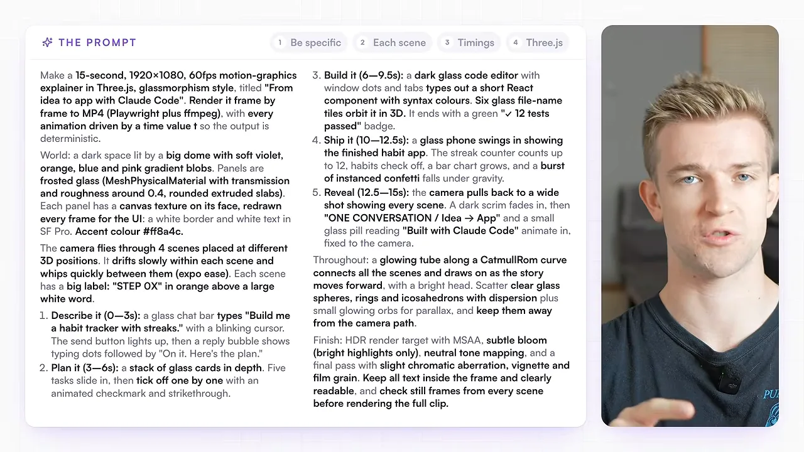
얼마나 자세히 쓸지는 원하는 결과에 달렸다고 해요. 딱 정한 게 있으면 아주 구체적으로 써야 해요. 열려 있다면 Opus 5.5 같은 모델에게는 느슨하게 맡겨도 돼요. 오른쪽 카드의 예시처럼 "아이디어 세 개를 글로만 먼저 줘, 내가 고를게"라고 해도 결과가 좋았다고 해요.
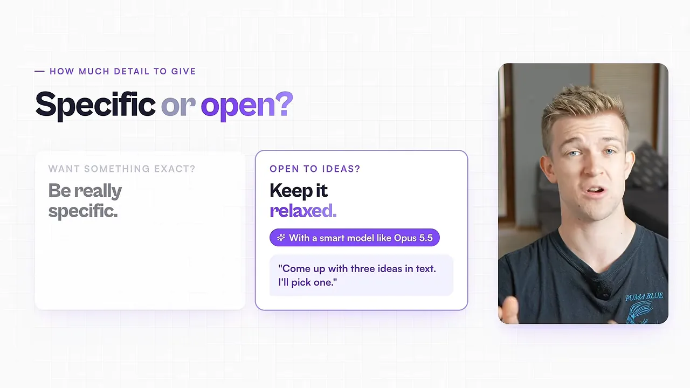
그래도 꼭 넣을 것은 다섯 가지로 꼽아요. Three.js와 셰이더를 쓰라고 하기, "전문적이고 세련되게 만들어 줘", "정말 원하는 모션 그래픽 직무에 지원하는 쇼릴처럼 만들어 줘", 카메라만 말고 장면 안 요소도 3D로 움직이게 하기, 검증 루프를 돌리게 하기예요. 2번과 3번은 생각보다 효과가 크다고 해요.
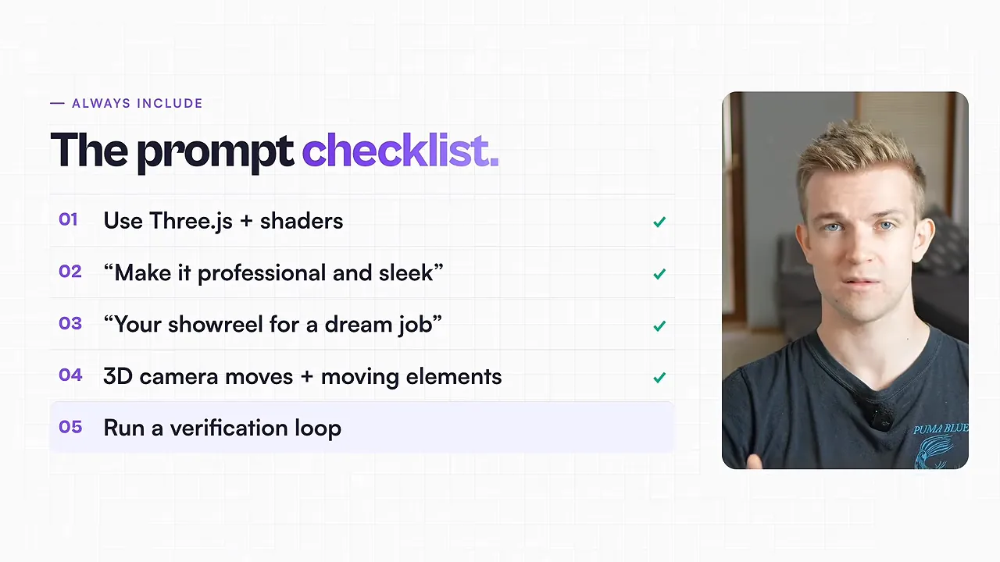
참고 사이트 녹화: 말 대신 보여 주기
Oddy와 게임 사이트 영상은 움직임을 글로 설명하지 않고 보여 줘요. 참고 사이트를 스크롤하는 화면을 녹화해 Claude 창에 끌어다 놓아요. Claude가 영상 속 내용과 전환 효과를 보고 따라 하게 하는 거예요. Oddy가 히어로 다음에 보낸 메시지가 아래예요. 입력창 왼쪽 위에 MP4 파일이 붙어 있고, 같은 문구로 나머지 랜딩 페이지를 만들되 새 에셋은 넣지 말고 배경은 순백으로, 스크롤하면 3D 물체가 움직이게 하라고 적었어요.
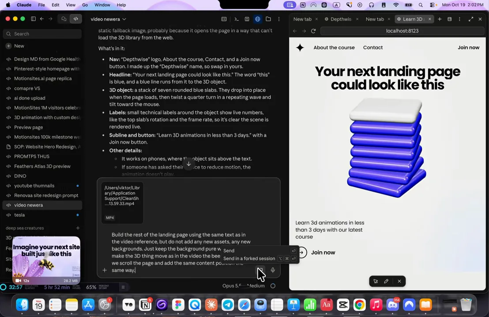
게임 사이트 영상은 녹화에 번호 붙인 요구 사항을 더해요. 참고는 Awwwards에서 찾은 'HAPE'의 런던 페이지예요. 로딩 뒤 캐릭터 얼굴 클로즈업으로 시작하고, 스크롤하면 카메라가 원을 그리며 캐릭터 주위를 돌아요. 프롬프트에는 세 가지를 적었어요. 영상처럼 천천히 제자리 걷기를 반복하기, 영상처럼 캐릭터 둘레를 돌되 첫 장면은 얼굴에 너무 붙지 않기, Higgsfield MCP로 분위기에 맞는 배경 음악 만들기예요.

참고 사이트를 찾는 곳도 영상마다 꼽아요. Oddy는 getdesign.ai와 Land-book 같은 디자인 모음 사이트를, MiladiCode는 Awwwards와 Pinterest를 써요. 레이아웃과 배치만 참고하고 브랜드와 내용은 내 것으로 바꾼다는 선은 4절과 같아요.
Three.js와 스크롤로 움직이는 3D
여기까지 준비한 재료를 화면에서 움직이게 하는 건 Three.js 코드예요. 사람이 이 코드를 직접 쓰지는 않지만, 무엇이 어떻게 그려지는지 알면 프롬프트에 무엇을 적을지 보여요.
화면의 모든 것이 코드예요
Matt Penny는 모션 그래픽이 어떻게 만들어지는지 네 단계로 보여 줘요. 아래쪽 줄의 AI writes code, Hidden browser, Screenshot, Stitch예요. AI가 코드를 쓰고, 보이지 않는 브라우저에서 그 코드를 띄우고, 그 화면을 1초에 60번 찍어서, 찍은 프레임을 이어 영상으로 만들어요.

발표자는 그래서 이렇게 말해요. 모션 그래픽은 결국 녹화하는 웹사이트라서, 웹사이트에 3D를 만들 수 있으면 영상에도 만들 수 있어요. Three.js는 웹에서 3D 요소를 만들 때 오래 써 온 프레임워크예요. 반사, 빛 번짐, 입자 같은 효과는 셰이더가 맡아요. 프롬프트에 '적절한 곳에 셰이더도 쓰라'고 적어 두면 똑똑한 모델이 어디에 쓸지 스스로 골라요.

고급스러운 느낌을 만드는 요소도 둘 더 꼽아요. 서리 낀 유리처럼 뒤가 흐릿하게 비치는 글래스모피즘, 그리고 카메라가 장면 사이를 날아다니는 움직임이에요. 슬라이드처럼 화면이 바뀌는 게 아니라 실제 3D 공간을 움직이는 것처럼 보여요. 아래 그림의 점선이 판 사이를 지나가는 카메라 경로예요.
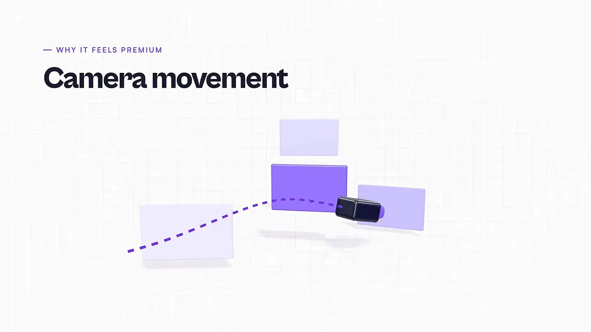
에이전트가 어떤 도구를 골랐는지도 볼 만해요. 전용기 사이트의 에이전트 보고를 보면, React 19 템플릿과 자주 충돌하는 React Three Fiber 대신 plain three(Three.js)를 썼다고 해요. Draco 디코더도 쓰지 않았어요. 작업 시간은 약 59분이었어요.

스크롤 한 번에 카메라 한 동작
전용기 사이트의 카메라 규칙은 이래요. 스크롤 한 번이 카메라 이동 한 번을 끝까지 실행하고, 스크롤 거리에 카메라를 묶지 않아요. 조금 굴리면 조금, 많이 굴리면 많이 움직이는 방식이 아니에요. 아래 그림처럼 앞쪽 3/4 뷰에서 출발해 다섯 번의 스크롤이 다섯 장면을 하나씩 넘겨요.
완성된 히어로는 로딩 애니메이션 뒤에 서서히 나타나요. 가운데에서 제트기가 날고, 스크롤 한 번에 첫 카메라 이동이 재생되고 왼쪽 아래에 설명 문구가 떠요. 위쪽에는 소리 버튼과 Full motion 버튼이 있어요. Full motion 버튼을 누르면 움직임을 줄인 reduced motion으로 바뀌어요.
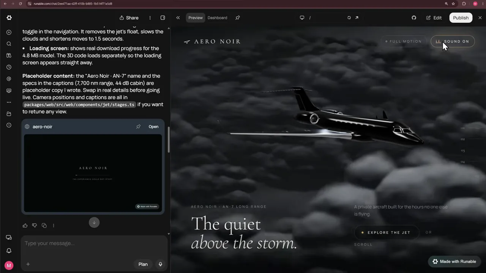
게임 사이트의 카메라는 다르게 움직여요. 참고한 'HAPE' 페이지처럼 스크롤에 따라 카메라가 캐릭터 둘레를 부드럽게 돌아요. npm install과 npm run dev로 띄워 보니 로딩 화면, 배경 음악, 도는 카메라까지 잘 나왔어요. 오른쪽 브라우저에서 리깅한 캐릭터가 걷고 있어요.

제품을 돌려 보게 하기
전기 자전거 사이트는 3D 모델을 두 가지로 써요. 하나는 스크롤에 맞춰 각도가 바뀌는 자전거예요. 검은 배경 위에서 프레임의 라임색 빛줄기가 빛나고, 오른쪽 아래에 '90 NM. BARELY' 문구가 있어요.

다른 하나는 방문자가 직접 돌려 보는 탐색 구간이에요. 'TURN IT OVER. LOOK CLOSER.' 제목 아래 Shop light, Night ride, Alpenglow 조명 버튼이 있고, 자전거 위에는 라임색 점(핫스팟)이 찍혀 있고 '160 mm fork' 같은 부품 라벨이 붙어 있어요.

모델 없이 처음부터 짓는 3D
게임 사이트의 두 번째 3D는 모델 파일 없이 참고 영상만으로 만들었어요. 참고한 건 스크롤하면 유리 질감 카드가 원을 그리며 돌고 배경에 입자가 흩날리는 서비스 섹션이에요. 아래 화면 앞쪽 카드에 'RACER'라는 제목이, 뒤로 보라색 입자가 보여요.

가운데 축에는 캐릭터와 어울리게 검을 세우기로 했어요. 카드는 모두 14장, 그중 무작위 3장은 영상 카드, 모든 카드에 참고 영상과 같은 유리 호버 효과를 주라고 적었어요. 결과가 아래예요. Claude가 직접 만든 검 둘레를 유리 테두리 카드가 돌고, 앞 카드에 눈밭의 사무라이 그림과 'SNOWFIELD SIEGE' 제목이 있어요.
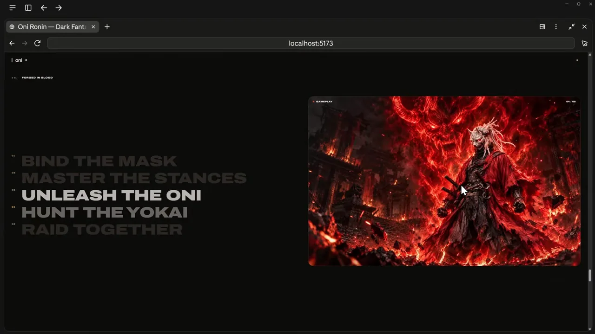
나머지 섹션의 배치와 내용은 Claude에게 맡겼는데도 전체 톤에 잘 맞았다고 해요. Oddy의 랜딩 페이지도 녹화를 따라 스크롤을 내리면 슬랩 더미가 따라 움직였고, 모바일에서도 별도 작업 없이 동작했어요.
만든 뒤 확인하고 고치기
미리보기에서 멋져 보여도 다 된 게 아니에요. 영상들이 확인하고 고친 방법은 네 갈래예요. AI가 스스로 밝힌 한계를 읽고, 눈에 보이는 버그는 캡처로 보여 주고, 어색한 움직임은 프레임으로 펼쳐 진단하고, 기능은 자동 테스트로 눌러 봐요.
AI가 밝힌 '못 본 것'과 '지어낸 것'부터 읽어요
전용기 사이트의 에이전트 보고에는 Not verified(확인 못 한 것) 목록이 따로 있어요. 샌드박스에 그래픽 카드가 없어 부드러움은 확인 못 했고, 소리와 모바일 스와이프도 직접 확인 못 했다고 적었어요. 기체 이름과 스펙 숫자는 자기가 지어 넣은 자리 표시용 문구라고도 밝혀요.
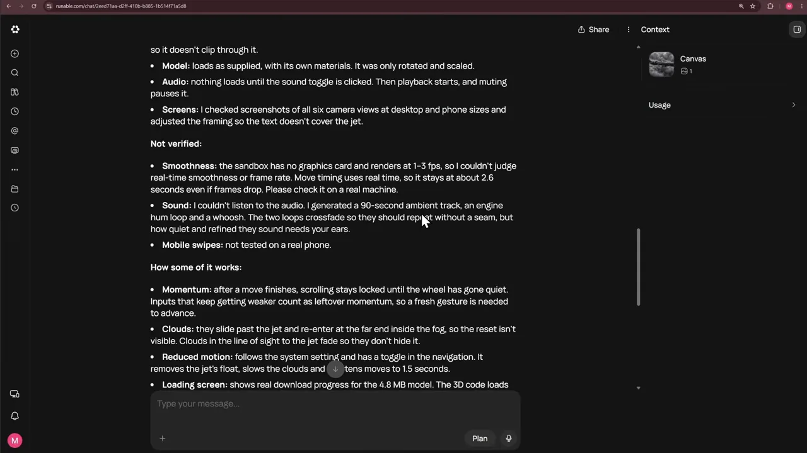
전기 자전거 사이트의 빌드 완료 보고도 같아요. 약 25분 만에 사이트를 만든 뒤, Things to know 아래에 따로 적어 뒀어요. 스펙 숫자는 아직 지어낸 값이고, 시승 예약 폼은 서버 없이 방문자의 메일 앱을 여는 방식이라는 거예요. 3절에서 브랜드 키트의 빈 스펙에 [placeholder] 표시를 달아 둔 것과 같은 이야기예요.

보이는 버그는 그 장면을 캡처해 붙여요
전기 자전거 사이트에서 발표자가 찾은 버그는 스크롤 중 3D 자전거의 그림자가 갑자기 나타나는 거였어요. 말로 설명하지 않고, 그림자가 생기기 전과 후의 프레임 두 장을 캡처해 붙인 뒤 부드럽게 해 달라고 했어요. 왼쪽 대화창 가운데에 그 두 장이 있어요.

Claude는 그림자가 사라진 게 아니라 빛 번짐 레이어 아래에 그려지고 있었다는 원인을 찾아, 그림자를 항상 위에 그리도록 그리기 순서를 고쳤어요. 왼쪽에 그 설명과 배포할지 묻는 질문이, 오른쪽에 그림자가 있는 자전거가 보여요.
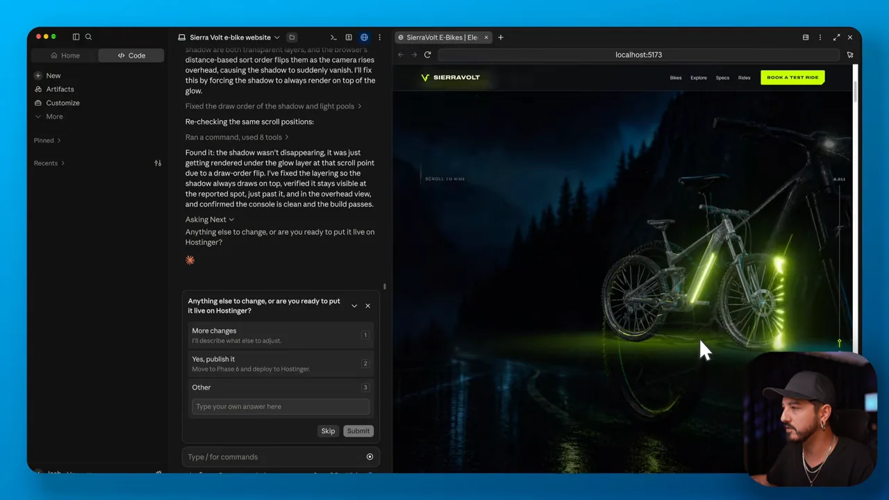
어색한 움직임은 프레임으로 펼쳐 진단해요
게임 사이트의 첫 걸음은 다리가 뻣뻣하고 어색했어요. 후속 프롬프트는 짧았어요. 다른 건 다 좋은데 다리와 걸음이 어색하니 자연스럽게 고치고 캐릭터에 오라를 더해 달라고 했어요. 큰 제목은 캐릭터 뒤로 보내고, 첫 장면은 지금보다 가깝게 시작하라는 요청도 붙였어요.
Claude는 고치기 전에 걸음부터 진단했어요. 오른쪽 Model viewer 창처럼 걷는 동작을 12컷 이미지로 펼쳐 놓고 보니, 엉덩이가 약 5cm 낮게 앉아 있어서 무릎이 펴지지 않았어요. 다친 사람처럼 걷고 있었던 거예요. 그래서 실제 사람의 엉덩이·무릎·발목 움직임 데이터를 바탕으로 걸음을 다시 만들었어요.
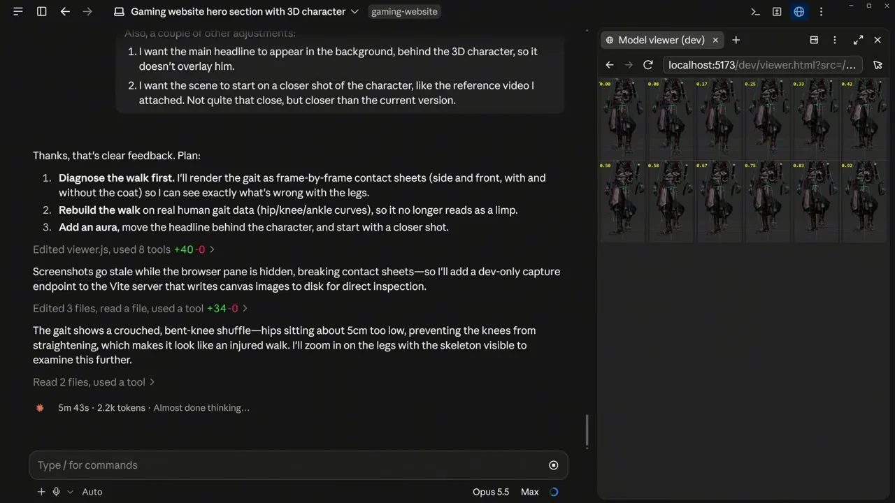
결과는 캐릭터 둘레에 주황빛 오라가 생기고, 'ONI RONIN' 제목이 캐릭터 뒤로 갔고, 첫 장면도 더 가까워졌어요. 다리 움직임은 훨씬 자연스러워졌지만 발표자는 아직 다듬을 여지가 조금 있다고 봐요.

기능은 실제 사용자처럼 눌러 봐요: TestSprite
게임 사이트 영상은 마지막 단계를 테스트에 써요. 미리보기에서 멋져 보여도 버튼이 안 눌리거나 작은 화면에서 깨질 수 있어서예요. TestSprite는 실행 중인 사이트를 실제 사용자처럼 돌아다니며 엔드투엔드 테스트를 만들고, 기능이 정말 동작하는지 확인해요. 새 프로젝트는 배포된 사이트의 URL(Uniform Resource Locator)을 넣거나, CLI(Command-Line Interface)로 코딩 에이전트에 붙이거나, AI 채팅(MCP 클라이언트)에 맡기는 세 가지 길로 시작해요. 발표자는 CLI를 골랐어요.
- CLI를 설치하고
testsprite setup을 돌려요 — Claude Code를 쓰는 걸 알아채고 API(Application Programming Interface) 키를 물어요. - 대시보드에서 API 키를 만들어 붙여 넣어요
- 화면에 주어진 프롬프트에 요청을 덧붙여 Claude에게 보내요 — "Use TestSprite CLI to test this project and fix what fails."에 "프런트엔드 테스트 10개를 돌려 달라"를 더했어요. Claude가 테스트를 짜서 돌리고, 실패하면 고친 뒤 다시 돌려요

대시보드에서는 10개 모두 통과로 보였지만, 그 가운데 둘은 처음엔 실패했었어요. 아래 TC-009 상세 화면 하단의 실행 기록에 Pass와 Failed 두 줄이 남아 있어요. 사전 주문 버튼이 뉴스레터로 이어지는지 확인하는 테스트였는데, 동작 하나가 안 됐고 Claude가 사람 손 없이 고쳤어요. 다른 하나는 Special Services의 검색창이에요. 그럴듯한 겉모습만 있고 실제로는 아무 일도 안 했는데, Claude가 실제로 검색되게 고쳤어요.

실패를 보여 주려고 8개를 더 돌렸을 땐 사운드 토글 버튼 테스트가 실패했어요. 실패 화면에는 녹화, 테스트 코드, 오류, 원인 추정, 수정용 프롬프트가 있어요. 아래 Error 탭은 버튼의 초기 상태가 aria-pressed=false라는 기대와 맞지 않았다고 설명해요. 에이전트가 알아서 못 고치면 수정용 프롬프트를 복사해 직접 보내면 돼요.
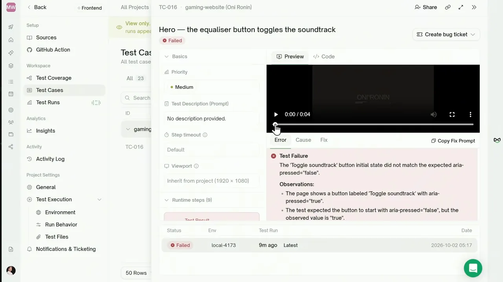
Claude는 이걸 진짜 UX(User Experience) 문제로 봤어요. 켜짐·꺼짐 상태가 눈에 안 보이는 aria-pressed 속성에만 있어서, 화면을 보는 사용자에게는 아무 표시가 없다는 거예요. 그래서 호박색 막대, 'ON/OFF' 글자, 재생 중 표시, 더 분명한 접근성 이름을 더했어요. 다시 돌린 테스트는 통과했어요.

작게 고치고, 스스로 확인하게 해요
다른 두 영상은 확인을 더 가볍게 해요. 전용기 사이트의 Runable에는 Edit 기능이 있어서, 페이지의 특정 요소나 섹션만 골라 고치라고 할 수 있어요. 전체 프롬프트를 다시 쓰지 않고 작은 부분만 다듬을 때 쓸모 있어요. 미리보기를 모바일·태블릿 크기로 바꿔 볼 수도 있어요. Matt Penny는 프롬프트 체크리스트 마지막 줄에 검증 루프를 넣어요. 요소가 겹치거나 글자가 너무 작은지 모델이 스스로 확인하게 하는 거예요.
배포: 세 가지 길
배포는 세 영상이 세 가지로 해요. 폴더를 끌어다 놓거나, 커넥터로 Claude가 올리게 하거나, 빌더의 버튼 하나로 끝내요. 게임 사이트 영상은 로컬에서 띄운 사이트를 테스트하는 데서 끝나고 배포는 다루지 않아요.
| 방법 | 영상 | 하는 일 | 짚은 점 |
|---|---|---|---|
| Vercel에 끌어다 놓기 | 3D 랜딩 페이지 | Claude에게 폴더를 열어 달라고 해서 Finder에서 찾고, Vercel 프로젝트 화면에 끌어다 놓아요 | 무료이고 내 도메인도 연결할 수 있어요. 다만 무료 Hobby 플랜은 비상업용이에요 |
| Hostinger 커넥터 | 전기 자전거 사이트 | 호스팅을 결제하고 도메인을 등록한 뒤 커넥터를 연결해요. "publish"라고 하면 Claude가 올려요 | 호스팅 플랜 결제가 필요해요. 도메인은 무료로 등록했어요 |
| Runable Publish | 전용기 사이트 | 서브도메인을 고치고 공개 설정을 정한 뒤 Publish를 눌러요 | 1분 안에 공개 주소가 나와요. 커스텀 도메인도 연결할 수 있어요 |
폴더를 끌어다 놓기: Vercel
Oddy의 배포가 가장 짧아요. Claude에게 폴더를 열어 달라고 해서 Finder에서 찾은 다음, Vercel 프로젝트 화면에 폴더를 끌어다 놓아요. 화면 가운데의 'Drop your project anywhere on this page to deploy' 문구 위로 파란 폴더가 들어가는 중이에요.

Claude가 직접 올리기: Hostinger 커넥터
전기 자전거 사이트 영상은 영상이 만들어지는 동안 배포 준비를 해요. Hostinger 호스팅 플랜을 결제하고, 온보딩에서 '기존 사이트 이전' → '웹사이트 파일 업로드'를 고른 뒤 무료 도메인 sierravoltebikes.com을 등록했어요. 파일 업로드는 Claude가 할 테니 이 화면은 그냥 나가요. 그다음 Claude 데스크톱의 커넥터 목록에서 Hostinger Connector를 찾아 연결하고, 브라우저에서 허용을 눌러요.

수정이 끝나고 "publish"라고 하면 Claude가 Hostinger 커넥터로 계정의 도메인을 찾고, 고른 도메인에 사이트를 올려요. 아래는 앱 안 브라우저 주소창에 그 도메인을 넣고 연 첫 화면이에요.

빌더 안에서 끝내기: Runable Publish
전용기 사이트는 Runable의 Publish 창에서 끝나요. Your Subdomain 칸의 주소를 원하는 이름으로 고치고, 공개 설정을 정한 뒤 Publish를 누르면 1분 안에 공개 주소가 나와요. 창 가운데의 Add custom domain으로 내 도메인을 붙일 수도 있어요.
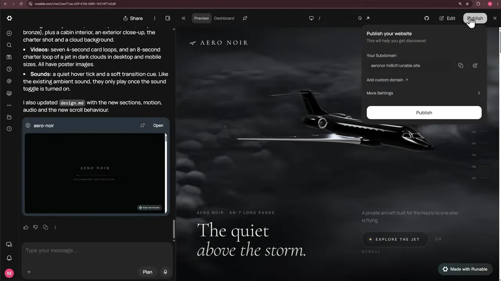
배포 전에 볼 메뉴도 Runable 대시보드에 모여 있어요. 왼쪽에 Analytics(방문 통계), SEO(검색 노출 설정), Domains(커스텀 도메인 연결), Payments(결제 기능), Secrets(API 키 같은 민감한 값 관리)가 있고, 오른쪽 SEO 화면에서 사이트 이름·설명·OG(Open Graph) 이미지·파비콘을 정해요. GitHub 계정을 연결해 새 저장소로 옮길 수도 있어요.
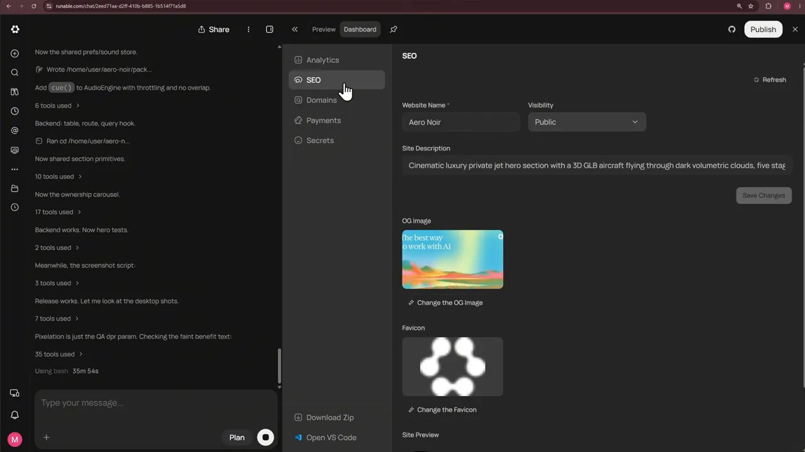
비용과 시간
영상들이 밝힌 돈과 시간을 모았어요. 서비스도 단위도 달라서 서로 직접 비교할 수는 없어요. 대신 어디에 돈과 시간이 몰리는지는 분명하게 보여요.
| 항목 | 영상 | 숫자 |
|---|---|---|
| Claude 요금제 | 3D 랜딩 페이지, 전기 자전거 사이트 | Pro 월 17달러(연간 결제, 월 결제는 20달러), Max 월 100달러부터. 두 발표자 모두 Pro면 충분하다고 해요 |
| 히어로 이미지 후보 3장 | 전기 자전거 사이트 | 약 20크레딧 (Higgsfield) |
| 3D 모델 | 전기 자전거 사이트 | 엔진 두 개로 하나씩 약 62크레딧, 하나만 44크레딧 |
| 6초 영상 | 전기 자전거 사이트 | 약 72크레딧 (Seedance 2.5) |
| GLB 내보내기 | 게임 사이트 | Tripo 유료 구독이 필요해요 |
| 사이트 생성 | 전기 자전거 사이트 | 약 25분 |
| 히어로 하나 | 전용기 사이트 | 약 59분 (에이전트 보고의 Worked for 59m 35s) |
| 사진 → 3D 모델 | 깃허브 저장소(img2threejs) | G63 차량 한 대에 3시간 넘게 |
| 15초 3D 영상 한 편 | 모션 그래픽 | 3만 7천 토큰. API 요금 74센트, 구독제로 약 5센트(발표자 계산) |
| 배포 | 전용기 사이트 | Publish 후 1분 안에 공개 주소 |
싼 것으로 방향을 정하고 비싼 것으로 넘어가요
전기 자전거 사이트의 크레딧을 한 축에 놓으면 순서가 보여요. 이미지가 가장 싸고, 3D 모델 하나는 그 두 배, 영상은 세 배가 넘어요. 그래서 발표자는 이미지 단계에서 충분히 다듬고 넘어가라고 강조해요. Claude도 단계마다 크레딧 견적부터 보여 주고 승인을 받아요.
아래 견적 화면처럼 Claude는 만들기 전에 크레딧과 잔액을 함께 보여 줘요. 히어로 후보 세 장을 GPT Image 2, 2k 최고 화질로 만들면 약 20크레딧이고 잔액은 4,616이라고 묻고, Go(추천)·Not yet·Other 중에 고르게 해요.

Claude 요금제는 Pro로 시작해요
Oddy는 Claude 요금제 페이지를 보여 줘요. 가운데 Pro가 연간 결제 시 월 17달러(월 결제는 20달러), 오른쪽 Max가 월 100달러부터예요. 발표자는 Max를 쓰지만, Pro로도 일주일에 웹사이트 몇 개는 충분히 만든다고 해요. 사용량은 몇 시간마다 다시 채워진다고 덧붙여요. 전기 자전거 사이트 영상의 발표자도 Pro 플랜이면 충분하다고 말해요.
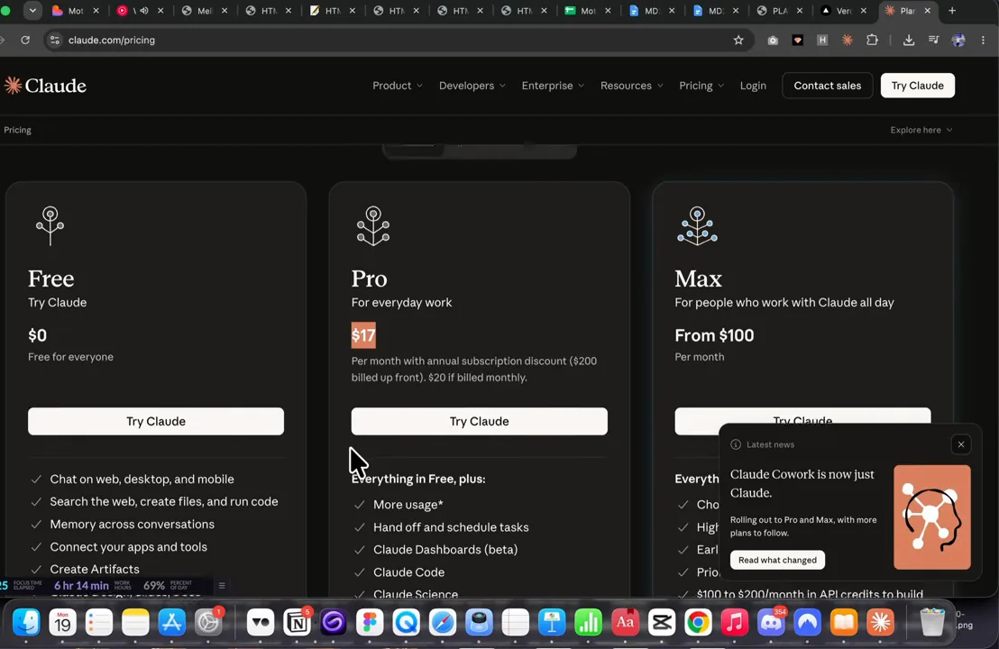
생성 도구 비용을 아끼는 길도 있어요. 게임 사이트 영상은 프롬프트, 이미지, 영상, 3D 모델을 설명란의 GitHub 저장소로 모두 공개해 둬서, 생성 도구에 돈을 쓰지 않고도 따라 할 수 있다고 해요.
코드로 그린 3D는 고치는 값이 싸요
Matt Penny는 15초짜리 RAG(Retrieval-Augmented Generation) 설명 영상 하나의 비용을 계산해요. 3만 7천 토큰이 들었고, Opus 5.5 출력 토큰은 100만 개에 20달러라서 API 요금으로는 74센트예요. Claude 구독제를 쓰면 토큰당 요금을 내지 않으니 발표자 계산으로 한 편에 5센트쯤이고, 가장 싼 요금제로 일주일에 400편을 만들 수 있다고 해요.

영상 생성 모델과 견주면 차이가 커요. Seedance 2.5는 가장 싸게 잡아도 1초에 10센트라서 15초면 1.5달러, 30배 차이예요. 고칠 때는 더 벌어져요. 왼쪽 위 Claude + Three.js 줄은 Edit 세 번에 몇 푼(pennies)이지만, 아래 Seedance 2.5 줄은 고칠 때마다 1.5달러를 다시 내서 세 번이면 4.5달러예요.

발표자도 Seedance가 할 수 있는 걸 다 할 수는 없다고 인정해요. 그래도 모션 그래픽만큼은 이 방법이 더 싸고 과정도 낫다고 봐요. 5절의 img2threejs도 같은 장점을 말해요. 모델이 코드라서 색이나 조명을 바꾸고 싶으면 에이전트에게 말로 시키면 돼요.
따라 만들기 전 점검표
앞 절들에서 영상들이 실제로 한 일을 작업 순서대로 묶었어요. 괄호 안 숫자는 자세한 내용이 있는 절이에요.
시작하기 전에
- 작업할 곳을 정했나요? Claude Code에 지시서를 넣을지, Claude 앱에서 대화로 갈지, 빌더 서비스 안에서 끝낼지예요 (3절)
- 브랜드 이름·슬로건·가격·색상·연락처를 미리 정리해 뒀나요? 비워 둔 칸은 AI가 임시값으로 채워요 (3절)
- 이미지·영상 생성 도구를 쓸 거라면 커넥터를 붙이고, Claude 앱을 완전히 껐다 켰나요? (6절)
- 참고할 사이트를 Awwwards, Pinterest, getdesign.ai, Land-book 같은 곳에서 골랐나요? 배치만 참고하고 내용은 내 것으로 바꿔요 (4·7절)
재료 준비
- 히어로 이미지는 후보를 여러 장 뽑아 고르거나, 레퍼런스와 초안을 섞어 목표 그림부터 만들었나요? (4절)
- 싼 이미지 단계에서 방향을 확정한 뒤 비싼 3D·영상으로 넘어가나요? (4·11절)
- 주인공 3D 모델은 AI에게 맡기지 않고 받기·바꾸기·코드로 짓기 중 하나로 따로 준비했나요? (2·5절)
- 받은 모델의 라이선스(작성자 표기, 상업적 이용)를 확인했나요? (5절)
- 이미지를 3D로 바꿀 땐 전신이 다 보이고 배경이 투명한 그림을 넣었나요? 가는 부품이 뭉개지지 않았는지 여러 방향에서 봤나요? (5절)
- 모델 파일을 GLB로 받아 프로젝트 폴더에 넣었나요? (5절)
- 영상은 원하는 장면을 직접 적어 주문하고, 정지 이미지를 먼저 만든 뒤 움직이게 했나요? (6절)
프롬프트
- 첫 프롬프트는 히어로 하나만 만들게 했나요? 나머지 섹션은 히어로가 마음에 든 뒤 따로 붙여요 (7절)
- 움직임을 글로 적기 어렵다면 참고 사이트를 녹화해 첨부했나요? 참고와 다르게 할 점은 번호를 매겨 적어요 (7절)
- 카메라 이동을 장면별로 하나씩 적었나요? 스크롤 한 번에 한 동작인지, 스크롤 거리에 묶을지도 정해요 (7·8절)
- Three.js와 셰이더, 3D 카메라 무빙과 움직이는 요소, 검증 루프를 프롬프트에 넣었나요? (7·8절)
- 배경 음악은 방문자가 버튼을 눌러야 재생되게 했나요? (6절)
확인하고 고치기
- 에이전트 보고의 '확인 못 한 것'과 '지어낸 값' 목록을 읽고, 실제 기기와 실제 값으로 확인했나요? (9절)
- 예약·문의 폼이 실제로 어디로 가는지 봤나요? 서버 없이 메일 앱을 여는 방식일 수 있어요 (9절)
- 보이는 버그는 그 장면의 전후 프레임을 캡처해 붙여서 고쳐 달라고 했나요? (9절)
- 어색한 움직임은 프레임별로 펼쳐 진단하게 했나요? (9절)
- 버튼·검색·토글이 겉모습만 있지 않은지 엔드투엔드 테스트로 눌러 봤나요? 실패 보고는 그대로 에이전트에게 돌려줘요 (9절)
- 모바일·태블릿 크기에서도 깨지지 않는지 봤나요? (4·9절)
배포
- 배포 방법을 골랐나요? Vercel 끌어다 놓기, 호스팅 커넥터, 빌더의 Publish 중 하나예요 (10절)
- 상업용이라면 무료 플랜의 사용 조건을 확인했나요? Vercel 무료 Hobby 플랜은 비상업용이에요 (10절)
- 커뮤니티 커넥터처럼 검증되지 않은 연결은 믿을 만한 곳의 것인지 봤나요? (6·10절)